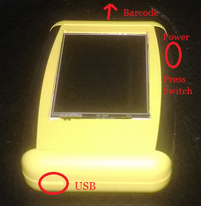

Got a stop over for 2 days (weekend unfortunately) in Hong Kong, its been over 20 years since I lived there and I cant wait to see how much everything has changed.
I was hoping to use the time to visit some enclosure/case manufacturers regarding my Mobile terminal, I’m getting some addresses and taking the prototype along just in case, but it being Saturday I may be out of luck arranging a meeting (Note to self, don’t let wife book next holiday!)
The case looks quite good and is about the perfect size. Everything currently fits in with some room to spare (though the depth is a real squeeze as you can see in the picture where the FTF is sticking out!) but it is not suitable and looks like amateur hour. I would like a custom case similar to this but modified so that:

1. It is at least 3mm deeper
2. it will require a recessed/bevelled cut-out for a 2.8″ TFT display on the top, the size of the cut-out needs to hold the TFT screen but also look professional
3. It will require a cut-out for the USB-Mini-B power/data connector at the back
4. It will require a cut-out in the right side for a power tactile micro-switch, this will need a colour matched moulded switch cover
5. it will require a transparent glass window at the front for the Symbol 1223 barcode scanner
6. It will require two recessed screw holes in the bottom to hold the barcode module.
7. It will require a small bracket to support the bottom of the TFT Display off the PCB
8. A moulded wall inside the bottom case to fix the battery properly and hold a 125khz RFID coil
Above all it must look professional (Somebody Help!)